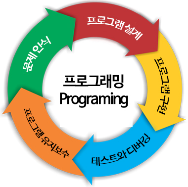

프로그래밍이란?
프로그래밍(programming)
우리는 요즘 여러 컴퓨팅 시스템에 설치된 다양한 프로그램(program)을 이용하여 실생활의 다양한 문제들을 해결해 나가고 있습니다.
예를 들어, 스마트폰에서 웹 브라우저 프로그램을 실행해서 날씨를 확인한다거나, 더 나아가 자동차에 설치된 자동 주차 프로그램을 이용하여 주차까지도 자동으로 해결할 수 있게 되었습니다.
프로그래밍(programming)이란 이와 같이 특정 목적을 달성하기 위해 설계된 알고리즘(algorithm)을 프로그래밍 언어를 사용하여 구체적인 프로그램으로 작성하는 과정을 가리킵니다. 간단히 프로그래밍이란 프로그램을 만드는 모든 작업이라고 볼 수 있는 것입니다.
프로그래밍의 순서
프로그램을 만들 때 곧바로 프로그램을 만들기 시작한다면 설계도도 없이 건물을 짓는 것과 마찬가지로 매우 어리석은 행동이 될 것입니다. 만들고자 하는 프로그램이 갖추어야 할 기능들은 어떤 것들이 있고, 또 이러한 기능들을 어떤 방식으로 구현할 것인지를 미리 생각해야만 효율적이고 좋은 프로그램을 만들 수 있습니다.
따라서 대부분의 프로그래밍은 다음과 같은 순서에 따라 진행됩니다.
1. 문제 인식
2. 프로그램 설계
3. 프로그램 구현
4. 테스트와 디버깅
5. 프로그램 유지보수

문제 인식과 프로그램 설계 단계가 프로그램의 설계도를 만드는 작업이라면, 프로그램 구현 단계는 설계도에 따라 직접 코딩(coding)을 수행하는 과정이라고 할 수 있습니다. 이후 테스트와 디버깅 단계를 통해 작성한 프로그램의 오류를 찾아 수정하여 배포할 수 있는 수준의 프로그램을 만들고, 이를 사용하면서 추가해야 되거나 수정해야 할 사항들이 있으면 유지보수하게 됩니다.
컴퓨팅 사고력(Computational Thinking, CT)
컴퓨팅 사고력(CT)이란 컴퓨터가 문제를 해결하는 방식처럼 복잡한 문제를 단순화하여 이를 논리적이고 효율적으로 해결하는 능력을 의미합니다. 컴퓨팅 사고력을 키우면 창의력, 사고력과 함께 문제 해결 능력까지 함께 배양할 수 있기 때문에 요즘 많은 관심을 받고 있습니다.
이러한 컴퓨팅 사고력을 키우는 가장 좋은 방법 중 하나가 바로 프로그래밍이며, 코딩(coding)인 것입니다.
프로그래밍을 통해 규모가 큰 문제를 작은 문제들로 쪼개거나 문제를 구조화하고 추상화하는 방법을 터득하여 이를 다른 분야의 일반적인 문제에까지 적용할 수 있는 능력을 가지게 됩니다. 이것이 장래 희망으로 프로그래머를 목표로 하지 않는 학생들까지 모두 코딩 교육을 받게 하는 이유이자 목적인 것입니다.